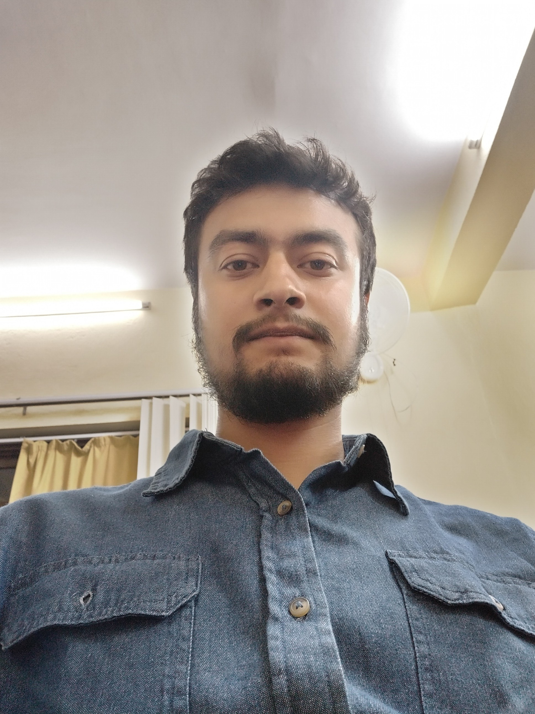

Graduate Student
University of Texas at Arlington
I am a graduate student in Department of Computer Science and Engineering at UT Arlington. Previously, I have worked as a software engineer at Deerwalk Inc., now acquired by Cedar Gate Technologies, LLC. I completed my undergraduate degree in Computer Engineering in 2018 from National Institute of Technology, Delhi. My academic interests are Machine Learning, unmanned robotics, natural language processing, computer vision and game development. My hobbies are cycling, playing soccer and creative writing.
MS in Computer Science
University of Texas at Arlington (Aug 2021 – Present)
National Institute of Technology Delhi, India (Fall 2014 – Fall 2018)
St. Xavier's Collge, Maitighar, Kathmandu, Nepal (2011 – 2013)
Budhanilkantha School, Kathmandu, Nepal (2011)
Software Engineer
Deerwalk Inc. (Now Cedar Gate Technologies, LLC), Lexington, MA | Kathmandu, Nepal (Jan 2020 - May 2021)
Associate Software EngineerDeerwalk Inc. (Now Cedar Gate Technologies, LLC), Lexington, MA | Kathmandu, Nepal (Jan 2019- Jan 2020)
Prosthesis 3-D printing and assembling TraineeE-nable Nepal, Sinamangal, Kathmandu, Nepal (June 2018- Aug 2018)
Soccer match result prediction, UT Arlington
2022 [Link to github repo]
Nepali vehicles number plate recognition system, UT Arlington
2021 [Link to github repo]
Plan Analytics, US Healthcare Data Analytics, Deerwalk Inc. (Now Cedar Gate Technologies, LLC)
Jan 2019 - May 2021 [Link to product website]
Executive Analytics, US Healthcare Data Analytics, Deerwalk Inc. (Now Cedar Gate Technologies, LLC)
Jan 2019 – May 2021 [Link to product website]
E-Nable Nepal Registration System, service recipient database desktop application
2018 [Link to github repo]
ZEUS, Interactive Chatbot, National Institute of Technology
2018 [Link to github repo]
Basic scanner of C language in Lex, National Institute of Technology
2017
Rankster, Cricket players’ database web application, National Institute of Technology
2016 [Link to github repo]
University of Texas at Arlington Syllabus Codes
• CSE 5311 Design & Analysis of Algorithms
• CSE 5360 Artificial Intelligence
• CSE 5383 Introduction to Unmanned Vehicle Systems
• CSE 5368 Neural network Design
• CSE 6363 Machine learning
GRE: 313 (Verbal 152, Quantitative 161)
TOEFL: 109 (Reading 27, Listening 30, Speaking 25, Writing 27)